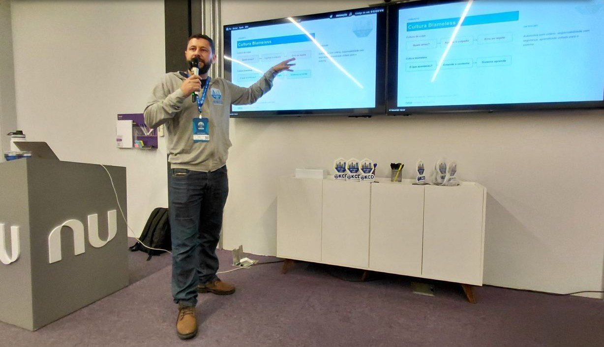
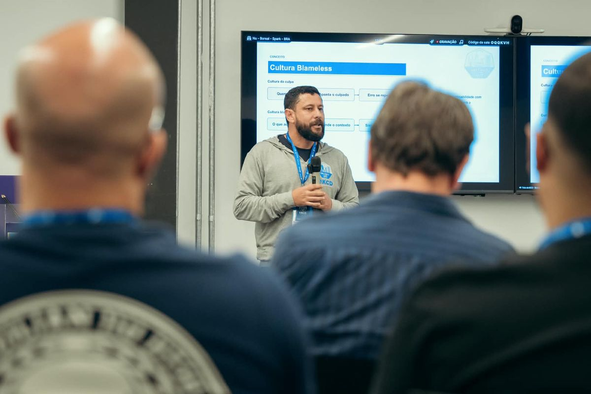

KCD São Paulo 2026
O Alerta Tocou às 3h da Manhã: Liderança, Burnout e a verdadeira Cultura Blameless
KCD São Paulo 2026, 26 de setembro de 2026, Lightning Talk, trilha Career
Como um telefone que tocava toda madrugada revelou um gargalo de permissão na equipe, e o que mudou
quando a liderança passou a compartilhar responsabilidade. Une a vivência em infraestrutura com
psicologia organizacional e a NR-1 (gestão de riscos psicossociais).
O Alerta Tocou às 3h da Manhã (edição de 3 anos do Meetup TecGroup)
Meetup TecGroup, 11 de novembro de 2026, YouTube
Desafios da liderança em ambientes de alta pressão, burnout nas equipes de tecnologia,
cultura blameless e como transformar incidentes em aprendizado.
Assistir no YouTube
Carreira e Tecnologia: da base à liderança em TI
Meetup TecGroup, YouTube
Bate-papo sobre a trajetória de montar computadores até a coordenação de times de infraestrutura,
com dicas sobre aprendizado contínuo, evolução técnica e soft skills.
Assistir no YouTube
"Liderança não é resolver tudo. É criar espaço para as pessoas resolverem."